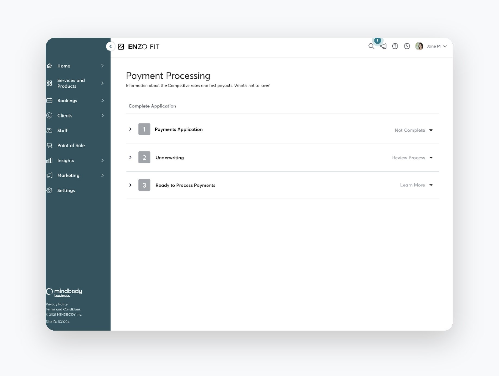
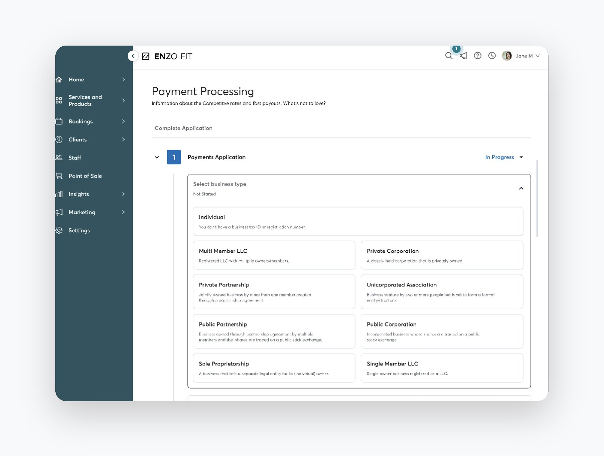

Payment Processing
The application a business completes to start taking card payments through Mindbody, turned from a compliance form into three clear steps.

Every payment starts
with an application.
Before a business can take a single card payment through Mindbody, it has to pass underwriting: who owns it, what kind of legal entity it is, and where the money should go.
I designed that onboarding inside the business software as a three step path, Payments Application, Underwriting and Ready to Process Payments, with a status on each step so owners always know where they stand and what happens next.
Steps from applying to taking payments, all visible from the start
Business types, each explained in one plain sentence
Status on every step: not complete, in progress or in review
The first question was one
owners could not answer.
The application opens by asking for a business type. Most studio owners do not know off hand whether they are a sole proprietorship or a single member LLC, and the wrong answer slows underwriting down.
Compliance forms also tend to be one long page with no sense of progress, and nothing tells you what happens after you hit submit. For a business waiting to get paid, that silence is the worst part.
Making a compliance form
feel like a path.
I designed the application flow with our product manager and payments engineers, inside what the underwriting partner required.
Show the whole path up front
The three steps appear together from the first visit, each with its own status. Owners can see that a review follows the application, and what being ready to process payments means, before they start.
Explain the choice inside the choice
Each business type is a card with a one line definition, like "You don't have a business tax ID or registration number." Owners pick the description that matches them instead of guessing at legal terms.
Three steps,
one clear status.

The application,
as Mindbody describes it now.
The Mindbody Payments application still starts where this design put it: behind the Payment Processing link in the business software, which only appears when a business is eligible. Mindbody now publishes how fast the path is, and how many people stand behind it.
The current application has also simplified the entity question further, to a single choice between a company and an individual owner, with the questions changing based on the answer. It is the same principle this project started from: ask owners something they can answer, then adapt.
How long an application can take, according to Mindbody
Until most businesses begin processing payments, with no credit check
Payments support representatives and specialists guiding businesses from onboarding on
Sources: Mindbody Payments, How to complete an application (Mindbody Payments), Mindbody Payments FAQ
The first step of the
payments lifecycle.
A clear start to Mindbody Payments
Every other payments feature, from the front desk checkout to Capital, depends on a business getting through this application. It is the front door.
Fewer wrong answers
Plain descriptions on every business type help owners pick the right entity the first time, instead of learning in underwriting.
No silent waiting
Each step carries a status, so owners can see an application move from in progress to review to ready.